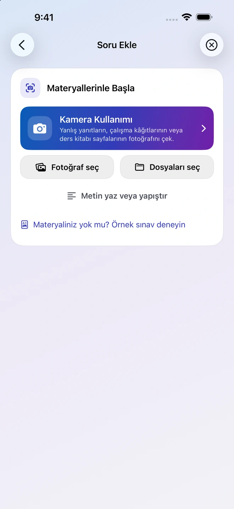
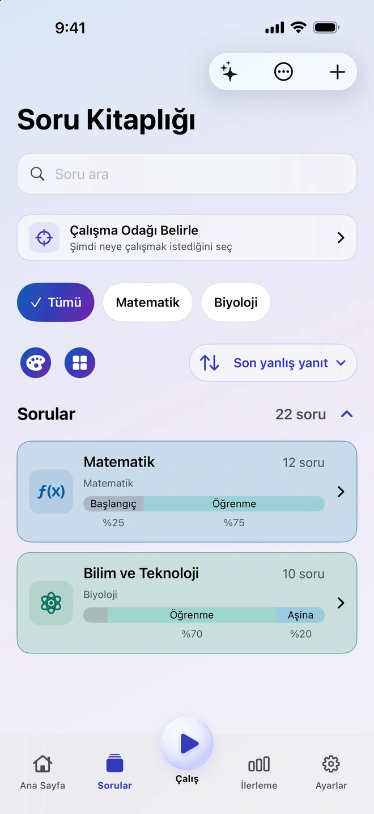
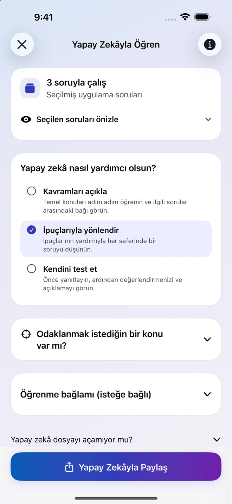
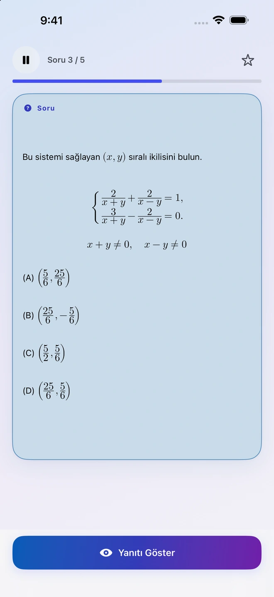
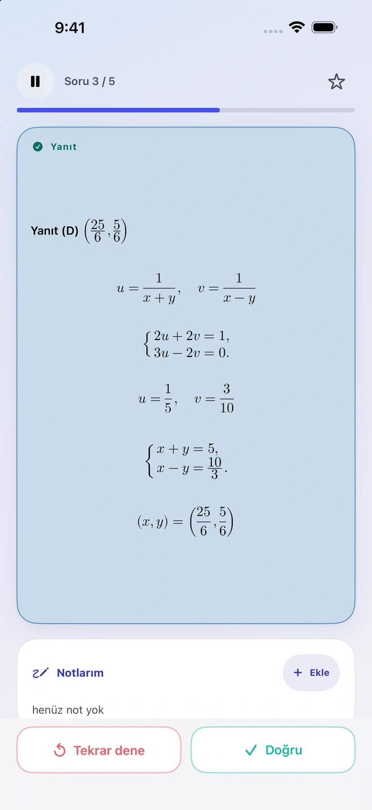
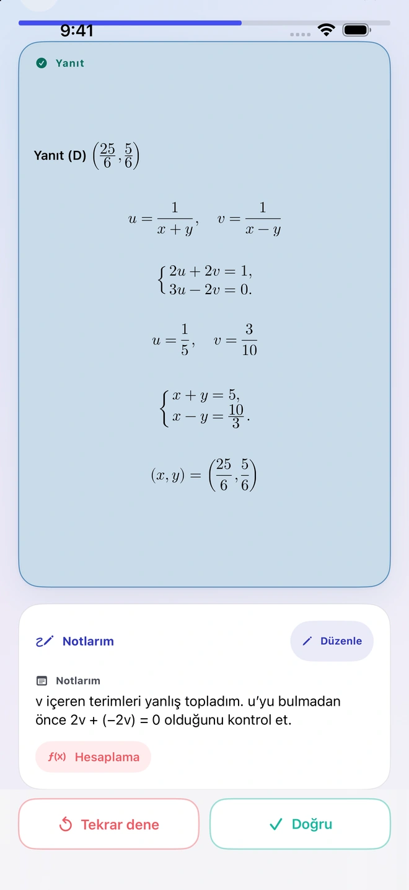
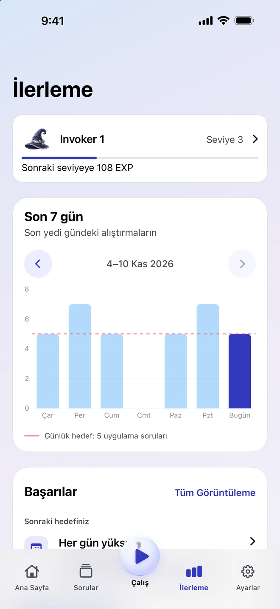

Materyallerinizden sorular hazırlayın
Fotoğraf, PDF, belge veya not ekleyin. Quiz Invoker, materyali ve talimatları seçtiğiniz uyumlu harici yapay zekâ uygulaması için hazırlar. Gelen soruları inceleyip kitaplığınıza aktarın.
iPhone için çalışma uygulaması
Bir ders kitabı sayfasından, nottan veya yanlış yaptığınız bir sorudan başlayın. Materyali Quiz Invoker’a ekleyin, hazırlanan soruları inceleyin ve yeniden çalışmak istediklerinizi saklayın.
Nasıl çalıştığını görün

Sizin için önemli soruları bir araya getirin ve dilediğiniz zaman yeniden çalışın.
Fotoğraf, PDF, belge veya not ekleyin. Quiz Invoker, materyali ve talimatları seçtiğiniz uyumlu harici yapay zekâ uygulaması için hazırlar. Gelen soruları inceleyip kitaplığınıza aktarın.
Seçtiğiniz soruları istediğiniz harici yapay zekâ uygulamasıyla paylaşın. Konuyu açıklamasını, adım adım ipucu vermesini veya ne anladığınızı sınamasını isteyin. Hangi dosya ve notları paylaşacağınıza siz karar verirsiniz.

Yanıtı görmeden soruyu çözmeyi deneyin ve ardından kendi sonucunuzu değerlendirin. Bir sonraki çalışmanızda hatırlamak için nerede zorlandığınızı yazın.


Haftalık grafikte son çalışmalarınızı ve günlük hedefinizi görün. Sorulara eklediğiniz notlar, önceki çözümünüzü yeniden değerlendirmenize yardımcı olur.


Quiz Invoker hesabı açmadan kitaplığınızı düzenleyebilir ve çevrimdışı çalışabilirsiniz. Quiz Invoker, dosyaları aygıtınızda hazırlar. Paylaşmayı seçtiğiniz materyali seçtiğiniz harici yapay zekâ uygulaması işler.